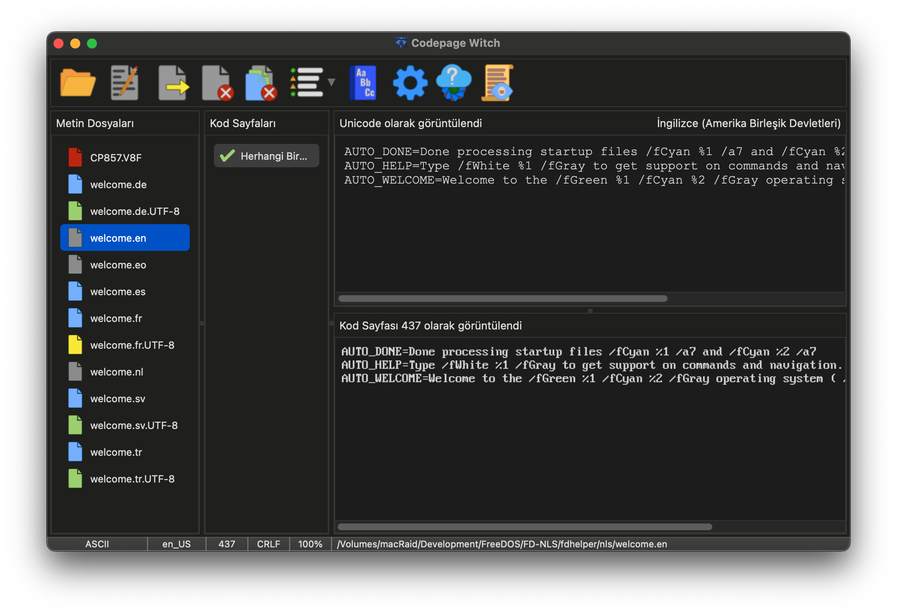

Cadı'nın Yüzü: Ana pencere
Ana arayüz, kaynak dosyalarınız ile hedeflenen sonuç arasında gerçek zamanlı bir "Ayna" sağlamak üzere tasarlanmıştır. Cadı, dosyalarınızın durumunu bir bakışta iletmek için renk kodlu bir sistem kullanır.

Tılsımlar: Araç Çubuğu
Araç Çubuğu, büyünüzün ana kaynağıdır. Dosya açma, dönüşümleri dışa aktarma ve Cadı'nın derin ayarlarına erişme büyülerini barındırır.
 |
Aç: Bir veya daha fazla dosya seçmek için dosya sistemine göz atın. Dosyaları veya tüm dizinleri dosya kazanına atmak için Sürükle-Bırak da kullanılabilir. |
 |
Düzenle: Seçilen dosyayı tercih ettiğiniz harici metin düzenleyicisine göndererek manuel düzeltmeler yapın. |
 |
Dışa Aktar: Dönüşümlerinizi mühürleyin. Bu, dosyayı seçilen kod sayfası ve satır sonu ayarlarıyla kaydeder. |
 |
Kapat: Seçilen dosyayı kazandan uzaklaştırın. |
 |
Hepsini Kapat: Kazanı tertemiz yıkayın, mevcut oturumdaki tüm dosyaları kaldırın. |
 |
Filtre: Yalnızca tam eşleşmeleri, potansiyel eşleşmeleri veya bilinen tüm kod sayfalarını gösterecek şekilde listeyi daraltın. |
 |
Sözlük: Cadı'nın çok dilli kelime dağarcığını genişletmek için Ana ve Kullanıcı Sözlüklerine danışın. |
 |
Seçenekler: Cadı'nın derin mekaniklerine göz atın. Görünümünü, davranışını ve otomatik dosya kontrol kurallarını ayarlayın. |
 |
Güncelleyici: Codepage Witch'in yeni sürümleri için dijital ufku gözleyin. |
 |
Günlük: Detaylı analiz raporlarını görüntülemek için Cadı'nın dahili kayıt defterini açın. |
Dosya Kazanı: Durum Simgeleri
Dosyalar eklendikçe, simge rengi Cadı'nın bulgularını gösterir:
| Analiz: Dosya şu anda arka planda işleniyor. | |
| Unicode Kaynak: UTF-8 kodlu bir dosya. Cadı en uygun kod sayfalarını eşleştirdi. | |
| Eski Kaynak: Kod sayfasıyla kodlanmış bir dosya. Cadı istatistiksel analiz kullanıyor. | |
| Sade ASCII: Özel karakter içermeyen 7-bit metin. Her türlü dönüşüm için güvenli. | |
| Kehanet: Bir biçimlendirme hatası (eksik satır sonu gibi) tespit edildi. | |
| Boşluk: Okuma hatası oluştu veya bu bir ikili (binary) dosya. |
Çift Aynalar: Orijinal vs. Dönüştürülmüş
- Unicode Görüntüleyici (Üst): Dosyayı standart UTF-8 metni olarak gösterir.
- Codepage Görüntüleyici (Alt): Metni seçilen kod sayfasıyla işler.